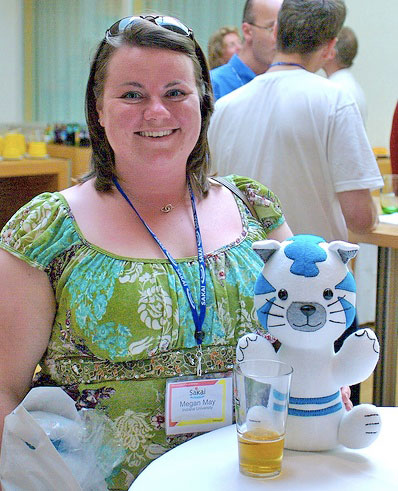
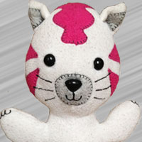
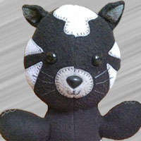
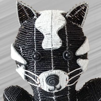
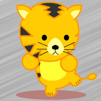

The Legend of Sakaiger
Sakaiger is a happy dancing creature. It is the logo of the hip, cool, underground, karaoke singing, silly elements of the Sakai Community (that is pretty much everyone).
The Sakaiger is very much part of the lore of the Sakai Quality Assurance effort.
Fun Sakaiger Facts
- The first Blue Sakaiger is larger than the rest and was given to Megan May — the then Sakai QA director.
- Sakaigers were first sighted in Amsterdam on June 13, 2007 at the Sakai Conference.
- Follow the worldwide travels of the Sakaiger via Flickr. Please upload your Sakaiger photos and tag them with the "sakaiger" tag.
- Andrew Thornton of CARET, Cambridge designed the original Sakaiger image.
- Each stuffed Sakaiger is hand sewn in Perry, MI.
The stuffed Sakaiger is based on a Simplicity 3779 pattern for a stuffed rabbit [www.simplicity.com] - the pattern was adapted to make the Sakaiger more tiger-like. - It is not possible to purchase a Sakaiger at any price!
Notes
From Harriet —The original concept of a Sakaiger was mainly a silly pun thought up by those crazy folks at CARET, Cambridge. We have intermittently talked about other Sakai related animals (Sakainocerous, for example), but none of them really caught on as the Sakaiger did. We wanted to have a real implementation of a Sakaiger, and Andy Thornton drew one, which ended up looking rather like the tiger from the Weebls cartoon 'Kenya'. Andy also bought a Weebl tiger and lion (and t-shirt) for the office. We customised our Weebl tiger a bit with a Sakai badge in its ear... The real life Sakaigers as realised by Chuck don't look much like the Weebl one (except they're clearly both meant to be tigers) - the Sakaiger is much taller and thinner and is smiley.
Friends & Relatives
Through the years, Sakaiger has discovered a few friends — even family. Meet them...
-

Sakaigress
Sakaigress (a.k.a. the pink Sakaiger) appeared March 28, 2008 and are given to people with special contributions to Sakai. Often the Sakai Executive Director awards a Sakaigress at their discretion.
-

Ninja Sakaiger
The Ninja Sakaiger (Black Sakaiger) are given to Sakai Fellows and are individually numbered with a serial number and the Fellow's name on the Sakaiger's shirt. To become a Sakai Fellow one must be nominated and chosen by the Sakai community. Sakaigers are traditionally given to the Fellows at the summer Sakai Foundation meeting each year.
-

Beaded Sakaiger
The Beaded Sakaiger is very rare and handmade of wire and beads and has its origins in South Africa. They are sometimes presented to Sakai Fellows.
-
Sakai Car
The SakaiCar is a 1998 Dodge Neon that is decorated to look like a Sakaiger. It has a top speed of 120MPH, a twitter handle @SakaiCar, a YouTube channel, a Photo Album, and races in a racing series called the 24 Hours of Lemons
-

Kenya Tiger
A relative of the Sakaiger is the Kenya Tiger from Weebls. Please visit the site, view the video and buy some of the totally sweet Weebl Stuff.